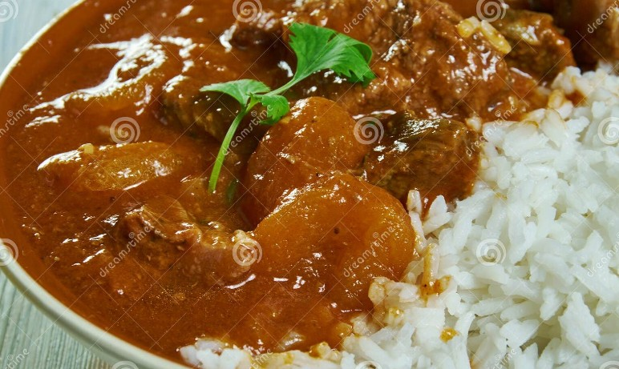

Cape Malay Curry
Description
Cape Malay Curry is a fragrant, mildly spiced curry known for its rich, golden sauce and tender meat.
It's a hearty South African dish often accompanied by rice or bread.
Ingredients
- Cubed beef or lamb
- Vegetable oil
- Diced onions
- Minced garlic
- Curry powder
- Tomato paste
- Diced tomatoes
- Beef or chicken stock
- Cubed potatoes
- Salt
Steps
- Heat oil and brown the meat in a large pot.
- Add onions and garlic, cook until softened.
- Stir in curry powder, cook for a minute.
- Mix in tomato paste and diced tomatoes.
- Pour in stock, bring to a simmer.
- Add potatoes, simmer until meat is tender.
- Season with salt, serve with rice.